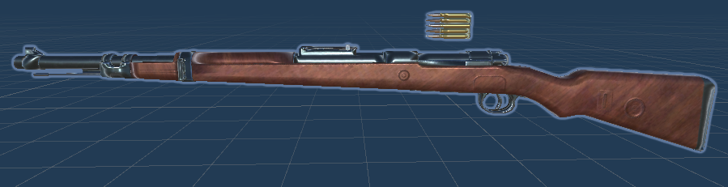

Results:
For the first prototype of the main gun, a cube was used in place of the actual weapon,
and in order to make it similar to how it will function when it's going to be fully implemented, the gun was inside
an empty object named "Gun holder", which rotated at the same time and with the same value as the camera on the x axis,
in order to move it up and down:
Now that the first prototype of the gun has been set up, it is time to implement the shooting mechanic.
For the shooting mechanic, raycast is used in order to cast a ray that is starting from the camera's position and rotation,
in the direction of where it's pointing. Note that the shot is being cast from the camera and not the gun in order to avoid
strange behavior of the gun (in case it is not orienting correctly) and to avoid being able to shoot through walls. A range was
also added to this, so it's impossible to shoot at an infinite distance, and after testing and doing some tweaking, I found the
right amount of range for the gun in order to not be able to "cheese" the enemies that will be in the future, so not being able to
shoot them from very far because that doesn't give the feeling of challenge anymore. The first prototype of the gun shooting mechanic
can be seen in this gif, in which I have added an impact force to when the raycast hits, so that it pushes the target a tiny bit:

The next step I took in order to make the gun feel like an actual bolt action rifle and not break the immersion of the player,
I added a shot sound to the gun, and with the use of coroutines I created a system that prevents the player from shooting the gun
until the sound of the shooting is over. It is important to note that this system was used for shooting because it needs to
replicate the feel of a bolt action rifle, which you need to cock after every shot, so that is why you can only shoot after
the sound is finished. Ideally, an animation of cocking the gun should also be played along with the sound, but in this case
it proved too difficult to implement (the gun model needs rigging, an animation needs to be recorded specifically for the gun
and more). I also prevented the player from shooting while the gun is reloading of course, and all of this can be seen in the
video I have uploaded on YouTube.
The reload mechanic is relatively simple because it checks for how many bullets are left in the magazine, and if it has
reached 0, or if there are fewer bullets in the magazine than the maximum amount and the player has pressed the "R" key,
it will start reloading, provided there is enough ammo left, of course. I added an extra quirk to the reload mechanic by
making a coroutine to check if the player has pressed the "R" key before the sound of the shot is done playing, so it waits
out for the shot sound to finish and then it starts the reload coroutine, making it a little easier for the player to reload
if he wants to because it can get frustrating to have to wait for the sound/animation to finish to be able to press "R" and reload.
The shotgun uses the same concepts as the bolt action rifle, but it does not cock the gun after each shot, and instead can shoot twice,
after which it needs to reload. The unique part about the shotgun is that it has a different mechanic to how the bullets are actually fired,
meaning the raycasts. Instead of projecting a ray that is starts from the camera and is pointed to the center of the screen, the shotgun uses 4 rays,
simulating real life pallets of a shotgun, and each one goes in a different direction:

As shown above, the pallets' direction is different for each pallet. One goes up, one goes down, one to the left and one to the right.
Now that the first prototype of the first gun is working, it is time to look for gun model fit for the game, making sure it fits with the game's aesthetic.
The model that I found is of a Kar98, and it seemed like the best choice because of the clean look of the model and because it is old enough. Even though the
game's story is set during The Civil War and Kar98 is more modern than that (first used in 1935), it did fit the aesthetic of the game.

As you can see in the picture, the model came with some bullets, which unfortunately were part of the gun model
(that being how the modeler left it), and could not be simply deleted or moved through Unity, so I had to cut them out in Blender.
After attaching the gun to the character, and rigging it, which is described in detail in the following devlog about animations,
I created a particle effect for the gun shot and one for the impact hit, whenever a target is hit by a bullet, in order to give
a more immersive and overall better feel of the game:

As you can see from the gif, there is a shot particle effect and there is an impact particle effect. Both weapons use the same effects,
but I showcased both of them because the shot particle is more clear on the bolt action rifle. The shot particle effect also has a point
light as a child object, which is turned on whenever the gun is shot, to simulate the lighting that is produced when a gun is shot in
real life, so if this was in a dark room, it would light up the room slightly, for less than one second. The impact particle
effect is responsive to the actual hit, so it angles based on how the raycast actually hit the object, involving the rotation as well.
The knife weapon makes use of an animation in order to attack, which is described the following devlog about animations.
In order to register the hit on an enemy, all enemies need to have a Rigidbody component on them for this to work because the
knife makes use of a box collider, which has the "isTrigger" set to true. Also, a hit is registered on the enemy only when the
animation is played, or more precisely, when the player attacks with the knife because otherwise it would just damage an enemy if
it came close to the knife. The collider of the knife is quite big, but after making a lot of tweaks to its size, this was found to
be the optimal size for it to allow the player to hit the enemies from a realistic distance:
Now that all of the mechanics of the weapons are implemented, it is time to configure the gun holder, which is the game object
that holds all of the weapons. This acts almost like an inventory with all the weapons, but it uses some logic when switching weapons.
Whenever the player switches the weapon, the rigging is also switched, which is all detailed in the following devlog about animations,
but it is also checked if the gun has finished firing, meaning the sound/animation has finished playing, or in case the knife is active
and about to be switched, if the animation of the hit is done playing. After this is checked, there is an extra check if the guns were
reloading during the moment that the gun was switched (not applicable to the knife), and if they were, the reload on the respective gun
will be reset, so the player will have to go through the whole reload animation when he switches back. This mechanic was added in order
to make the feel of the guns more realistic and to not give the impression of a more arcade-ish game.
The feature to zoom with the rifle was also added, making it easier to shoot at a longer distance. This was done by
lowering the camera's FOV when the right mouse button is held, and on release, bringing it back to normal:
Validation:
A lot of tweaking has been done on the weapons to make the player feel like he is playing in the time period
of The Civil War. For the bolt action rifle, different kind of sounds were tested in order to make the gun feel slow, because it
requires the player to wait between each shot, replicating the feel of having to cock the gun, so a longer time was chosen, same as
for the reload, since it replicates the feeling of having load the gun with one bullet at a time. The rifle is a powerful gun, so the
player can shoot from a good distance and kill the weaker enemies in one hit, but the tradeoff is that it takes a long time to operate
and it is harder to use at close range. The shotgun, on the other hand, needs to have the feeling of being really powerful at
close range, dealing high damage, but getting increasingly worse at longer ranges. The pallet system that is used makes a great
job at that because every pallet has its own damage, so the further an enemy is, the fewer pallets will hit him. At close range
it is very effective and it will kill most of the enemies with all the four pallets hitting, but it is limited to two shots before
having to reload, and there is also a small timer in between shots, in order to make it viable and not extremely powerful. The knife
however, is limited to the animation that it uses, which has some issues with the rigging of the hands to the weapon, causing some
jitter, but it serves its purpose as intended. The collider or hitbox of the knife was increased in length until it gave the feel
that the player can attack enemies from a realistic hand-to-hand combat scenario. The knife can also hit more targets while attacking
because it is a slashing animation.
Overall, the feel of the weapons is that they belong to the time period of when the game takes place, but also that they are
part of an important soldier's arsenal.